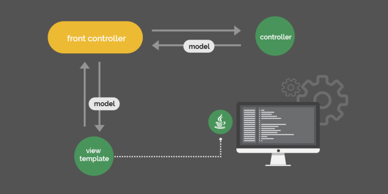

• DispatcherServlet получает запрос и, опираясь на свои настройки, принимает
решение о том, какому контроллеру перенаправить запрос (Handler Mapping).
• После определения контроллера, запрос перенаправляется в него (Controller).
Там запрос обрабатывается, и в ответ отправляется модель и представление -
ModelAndView. Model - данные, view - логика их отображения.
• DispatcherServlet, на основе полученных данных, определяет какое
представление (view) нужно использовать(ViewResolver), и в ответе получает имя
данного представления.
• Представление получает данные (model), для отображения по определенной
логике, и посылает ответ DispatcherServlet, если есть такая необходимость.
• В представление передаются данные (model) и обратно, если необходимо,
посылается ответ от представления.
Home page